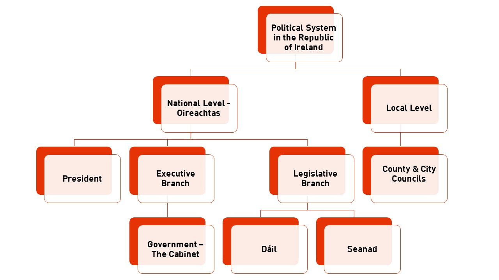

Levels of Government

The state of Ireland is governed by a number of different bodies which cover both the national and the local level. Each has specific capabilities and responsibilities. You may be familiar with the Dáil, Seanad and local councils but to make change happen it is important to know exactly what they can and cannot do, and more importantly, what they should do.
The Irish constitution outlines the powers and functions of the oireachtas which is made up of the President, the Seanad and the Dáil.
Dáil:
- Directly elected at least once every five years by those on the electoral register to which any citizen over 18 years of age can be added
- System of proportional representation by means of the single transferable vote used
- The constitution states there must be a TD for every 20 – 30,000 people so currently we have 40 constituencies with between 3 and 5 TDs each and 158 TDs in total
- Constituencies are usually reviewed following each census (i.e. every 5 years) and legally must be revised at least every 12 years
- Only the Dáil can introduce financial legislation and Bills to amend the Constitution
Seanad:
- The 60 Members of Seanad Éireann are chosen in several different ways:
- 43 Senators are elected from five panels representing different interests including culture and education, agriculture, labour, industry and commerce, and public administration
- 3 Senators are elected by the graduates of the National University of Ireland (NUI) which includes NUI Galway, UCC, UCD, Maynooth University, Royal College of Surgeons in Ireland, Milltown Institute and Uversity.
- 3 Senators are elected by the graduates of the University of Dublin (Trinity College)
- 11 Senators are nominated by the Taoiseach
- The members of the Seanad can make recommendations (but not amendments) to financial Bills. These must be made within 21 days
- They can also make amendments to non-financial Bills within 90 days
- They can also shorten the time within which the President may sign a Bill into law - this is called an ‘earlier signature motion’
Both houses can:
- Introduce and debate Bills
- Debate issues of public concern
- Examine and oversee Government policy and administration
- Approve the funding of Government departments
- Make laws
- Remove the President from office
- Remove the Comptroller and Auditor General or a judge of the High Court or Supreme Court from office
- Declare or end a state of emergency
Government (also informally known as “The Cabinet”):
- The Government consists of a minimum of seven and a maximum of 15 members. The Taoiseach, the Tánaiste and the Minister for Finance must be Members of Dáil Éireann. The Constitution also allows two Senators to be members of the Government.
- The formation of the government begins with each political party (or coalition) nominating a member of theirs to be Taoiseach. TDs then vote to elect one of the nominees as Taoiseach.
- The Taoiseach nominates the other members of the Government as Ministers and assigns Government Departments to them. The Dáil votes then on whether to approve the government.
- The Government meets and acts as a collective authority. This means that the Government as a whole, rather than individual members of the Government, makes all decisions. However, in practice, the Taoiseach, Tánaiste and Minister for Finance have more influence over decisions than the other cabinet members.
- A Taoiseach must resign from office if she or he loses the support of a majority of the Dáil unless she or he secures a majority in a general election following a dissolution of the Dáil.
- If the Taoiseach resigns, all other Ministers are deemed to have resigned too. They and the Taoiseach continue to carry on their duties until successors are appointed. Similar arrangements apply whenever the Dáil is dissolved.
- The Government usually meets once a week and its proceedings are confidential. Although the term Cabinet has no formal basis in the Constitution, it is frequently used to describe formal meetings of the Government, to distinguish them from more general activities of government.
The president:
- The presidency is largely a ceremonial role and many of the associated powers and functions are only carried out under instruction from the government or by requirement of the constitution though the president does have some discretionary powers also.
- Functions required by the constitution:
- Appointing the government - The President must officially appoint the Taoiseach and Ministers which form the government. However, the President has no choice in who they appoint as the Taoiseach is elected by the Dáil and the Ministers are selected by the Taoiseach. The President also accepts the resignations of Taoisigh and Ministers
- The President also appoints the judges to all Courts of the Republic of Ireland who are chosen by the government based on advice given by the Judicial Appointments Advisory Board
- The President dissolves the Dáil if the Taoiseach requests. If the Taoiseach has lost a motion of no confidence, the President can refuse the dissolution to allow the Dáil the chance to elect a new Taoiseach.
- The President signs bills which have gone through the Oireachtas into law
- The President represents the state in foreign affairs
- The President is supreme commander of the Defence Forces, though this is just a ceremonial role and the command of the defence forces is carried out by the government through the Minister for Defence
- If directed to by the government, the President can pardon or shorten punishments if miscarriages of justice are discovered.
- Discretionary powers
- If the Taoiseach has lost a motion of no confidence, the President can refuse the dissolution to allow the Dáil the chance to elect a new Taoiseach.
- If requested to do so by a petition signed by a majority of the membership of the Seanad, and one-third of the membership of the Dáil, the President may decline to sign a bill into law (other than a bill to amend the constitution) until it has been approved by either the people in a referendum or the Dáil reassembling after a general election, held within eighteen months.
- The President can refer bills to the Supreme Court to review whether they are in line with the constitution. They must first convene the Council of State but do not have to follow its advice.
- The President may, at the request of the Dáil, impose a time-limit on the period during which the Seanad may consider a bill. The effect of this power is to restrict the power of the Seanad to delay a bill that the Government considers urgent.
- The President may, if requested to do so by the Seanad, establish a Committee of Privileges to solve a dispute between the two Houses of the Oireachtas as to whether or not a bill is a money bill. This is important because the Seanad has limited power when it comes to money bills.
- The President may address, or send a message to, either or both Houses of the Oireachtas. He or she must first get approval from the government. They may also address the nation in a similar manner.
- The President of Ireland is formally elected by the citizens of Ireland once in every seven years, except in the event of premature vacancy, when an election must be held within sixty days.
- Candidates must be Irish citizens, over the age of 35 and they must have the support of either 20 TDs or Senators, or 4 county or city councils. Those who have served one term as President can nominate themselves as candidates.
- The Council of State advises the President. It is a group of:
- Current and past Taoisigh (Prime Ministers)
- Presidents
- Chief Justices
- The Ceann Comhairle
- The Cathaoirleach of Seanad Éireann
- The Attorney General
- Citizens appointed by the President (who can also be replaced by the President)
County and City Councils:
- There are 31 Local Authorities which can be city or county councils
- These are responsible for housing, planning, roads, water supply, environmental protection, provision of recreation and amenities and community infrastructure.
- Since the 2014 local elections there are a total of 949 members known as councillors.
- There are 26 county councils and they are responsible for local government in 24 geographical counties including the county of Dublin. Dublin county has 3 county councils – South Dublin County Council, Dun Laoghaire-Rathdown County Council and Fingal County Council.
- There are 2 city and county councils. They are responsible for local government in Limerick and Waterford.
- There are 3 city councils and they are responsible for local government in the cities of Dublin, Cork and Galway.
- The number of members that can be elected to a council depends on the size of the county's population.
- Each council administrative area, apart from the 3 Dublin county councils and the 3 city councils, has a system of municipal districts based on electoral areas. Each council has at least two municipal districts. For example, Kilkenny County Council has 3 municipal districts.
- The local authority members elected from these municipal districts take certain decisions in relation to the districts. Certain municipal districts may be known as metropolitan districts or borough district
- The way local government works was overhauled in 2014. See the full bill that was passed here